Propuesta técnica · Coordinación de Fomento Empresarial · Comfenalco Cartagena
Misión Internacional B·SMART Barcelona 2027
Un programa de seis meses de innovación aplicada e internacionalización para 20 MiPymes afiliadas, con una semana de inmersión en Barcelona durante el Smart City Expo World Congress.
Programa
6 meses · 88 h por empresa
Fechas tentativas
Jul–dic 2027 · misión 30 oct–7 nov
Participantes
20 MiPymes afiliadas
Modalidad
Híbrida · inmersión en Barcelona
Presentado a
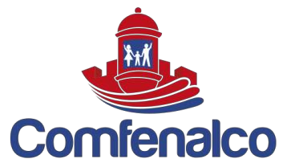
Comfenalco CartagenaCoordinación de Fomento Empresarial
Presentado por
Torres Creativas S.A.S.Cartagena de Indias · Noviembre de 2026
00
Lo que entendimos
Entendimiento de la solicitud
La Coordinación de Fomento Empresarial de Comfenalco Cartagena busca un aliado para diseñar y operar su misión empresarial internacional de innovación aplicada e internacionalización 2027, dirigida a MiPymes afiliadas de distintos sectores.
La Caja ya ha llevado empresas a otros ecosistemas. El reto ahora es que el viaje se traduzca en capacidades instaladas, negocios en curso e innovaciones implementadas, y que ese resultado se pueda medir empresa por empresa.
Respondemos con la Misión Internacional B·SMART Barcelona, un programa propio de Inngenios que ya recorrió esta ruta en noviembre de 2025 con una delegación de Cartagena.
Lo que pide Comfenalco
Una misión multisectorial con agenda 50 % comercial y 50 % de innovación aplicada, sustentada en un diagnóstico inicial por empresa y con medición de impacto sobre siete indicadores.
Punto de partida
Una misión de visitas
La agenda es igual para todas las empresas
El resultado depende de cada participante
El aprendizaje se queda en el viaje
→
Hacia dónde va
Un programa de seis meses con resultados medibles
Cada empresa viaja con diagnóstico, reto y agenda de citas
Aprende haciendo en laboratorios de innovación
Regresa con un plan de acción que se acompaña y se mide
3.1
Estructura Comfenalco · 3.1
Presentación del proveedor
Torres Creativas S.A.S. (NIT 900.886.610-1) opera bajo la marca registrada Inngenios®. Desde 2015, en Cartagena de Indias, somos una firma de consultoría y entrenamiento en innovación con experiencia en programas para MiPymes, emprendimientos y misiones internacionales.
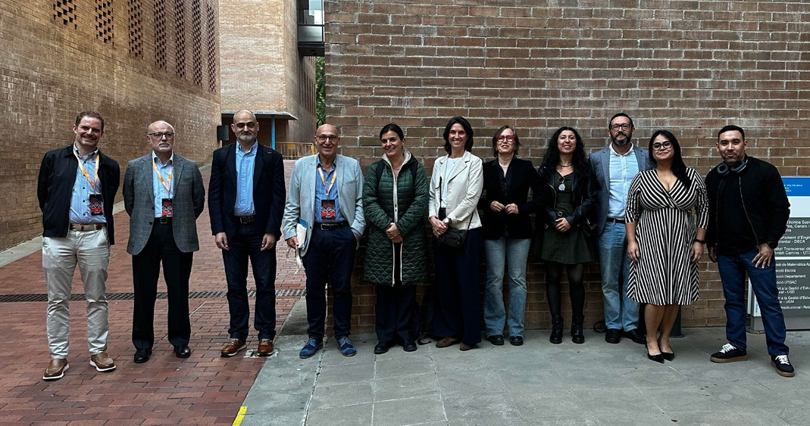
Misión probada
B·SMART Barcelona, edición 2025
La Ruta Smart City Cartagena–Barcelona se realizó del 3 al 7 de noviembre de 2025 con una delegación de Cartagena, organizada junto a Ruta Barcelona y con CLIME, iCluster y Protofy como colaboradores.
Participación en el Smart City Expo World Congress
Visitas a DFactory, Barcelona Supercomputing Center, EIT Urban Mobility, Barcelona Activa y Protofy
Mesa redonda con FEVEM
Taller de creatividad estratégica e innovación empresarial dictado por Inngenios
Desarrollo de capacidades en MiPymes y emprendimientos
Programas operados por Inngenios
Futurizza · Universidad Sergio Arboleda
100 empresas
Operamos el proyecto durante cinco meses con empresas del Caribe: más de 500 horas de formación, consultoría y mentoría. Resultado: 100 prototipos de base tecnológica, de TRL 2-3 a TRL 5-9.
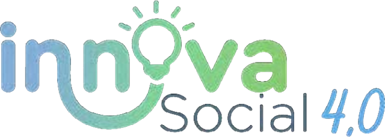
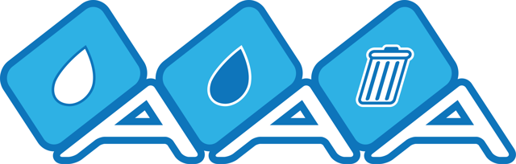
Innova Social 4.0 · Triple A
Ventas hasta +144 %
Un embudo de selección: de 82 postulaciones, 20 emprendimientos socioambientales del Atlántico desarrollaron capacidades de innovación y de negocio en un bootcamp, y 10 recibieron capital de escalamiento y acompañamiento especializado de Inngenios durante nueve meses. De esos diez, nueve aumentaron sus ventas entre 15 % y 144 % y el décimo logró sus primeros ingresos. NPS de 90 puntos.
Hoy somos el aliado principal para la ejecución de Innova Social 5.0, entre finales de 2026 y el primer semestre de 2027.
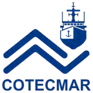
EnCadena · Cotecmar y Colombia Productiva
25 pymes
Operamos la consultoría del programa de desarrollo de proveedores del sector naval y astillero (2024-2025). Analizamos los bienes de 50 pymes proveedoras, seleccionamos 25 beneficiarias y construimos con cada una su hoja de ruta de asistencia técnica para llegar a nuevas industrias y sustituir importaciones.
Innovación en grandes organizaciones
Empresas que hemos acompañado en sus áreas de innovación
Comfenalco Cartagena
149 → 23
Acompañamos desde 2021 su cultura y sus capacidades de innovación. La Caja pasó del puesto 149 (2024) al 101 (2025) y al 23 (2026) en el Ranking de Innovación Empresarial de la ANDI. Es un resultado de muchos actores al que contribuimos.
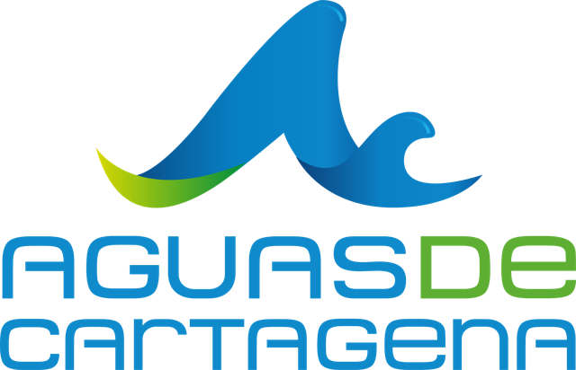
Aguas de Cartagena
+$10.000 millones
Cinco años acompañando un modelo de innovación con tres pilares: estrategia y gobierno, proceso y ecosistema, y cultura. La empresa suma más de $10.000 millones en valor recuperado, con iniciativas como Big Data para recuperación de cartera y medición inteligente.
Surtigas · una empresa Promigas
Encuentro Legendario
Experiencia de aprendizaje diseñada y facilitada por Inngenios para el equipo de Surtigas, uno de los casos documentados en nuestro brochure.
Grupo Ecopetrol
Refinería de Cartagena
Cliente de Inngenios en entrenamiento e innovación. También hemos cooperado con Econova Caribe, el laboratorio de innovación de Ecopetrol y la Cámara de Comercio de Cartagena.
Quiénes somos y referencias
Nuestro propósito
Ayudamos a personas y organizaciones a desarrollar capacidades sistémicas para innovar, crear valor y liderar el cambio.
El programa interviene 20 MiPymes afiliadas durante seis meses, de julio a diciembre de 2027, con una persona por empresa en la misión.
Participantes
20 MiPymes afiliadas
Grupo multisectorial, con una persona por empresa en la misión.
Balance
50 % comercial · 50 % innovación
La agenda se reparte en partes iguales, como lo solicita Comfenalco.
Dedicación
88 horas por empresa
Sesiones grupales, asesoría individual y agenda en destino.
Criterio de éxito
Innovación implementada
Planes de acción en marcha y siete indicadores con meta.
Qué incluye
Por empresa participante
01ProgramaDiagnóstico inicial, preparación grupal e individual, plan de acción, seguimiento e informes de resultados.
02ViajeTiquetes Cartagena–Barcelona–Cartagena y siete noches en hotel de cuatro estrellas, en habitación individual.
03CongresoPase de tres días al Smart City Expo World Congress.
04FormaciónDos entrenamientos en laboratorios (Protofy, 4 horas; Manual Thinking, 3 horas), con materiales, y un módulo académico con certificado.
05NegociosVisitas empresariales y técnicas, rueda de negocios y encuentros de relacionamiento.
06En destinoBus privado, tarjeta de transporte, almuerzos y dos cenas de relacionamiento.
07AcompañamientoDos consultores de Inngenios y coordinación local en Barcelona. Certificado de participación y memoria audiovisual.
A cargo de Comfenalco
Para la operación
01ConvocatoriaComunicación con los afiliados y validación de las empresas seleccionadas.
02EspaciosSalón y audiovisuales para las sesiones presenciales en Cartagena.
03EnlaceUna persona de Fomento Empresarial como interlocutora del programa.
No incluye
—Seguro médico internacional de viaje, que cubre cada participante.
—Pasaporte, gastos personales, acompañantes y equipaje adicional.
—Noches de hotel fuera de las fechas de la misión.
—Cambios de itinerario o penalidades de aerolíneas atribuibles al participante.
#SCEWC27 · Barcelona
SMARTCITYEXPO WORLD CONGRESS
El evento de referencia mundial en innovación urbana. Desde 2011, durante tres días, Barcelona reúne a ciudades, gobiernos, empresas, startups y expertos para acelerar soluciones con impacto real en las ciudades.
2 al 4 de noviembre de 2027Fira de Barcelona · recinto Gran Via
27.000+asistentes
990+ciudades
138países
1.190expositores
Cifras de la edición 2026, organizada por Fira de Barcelona.
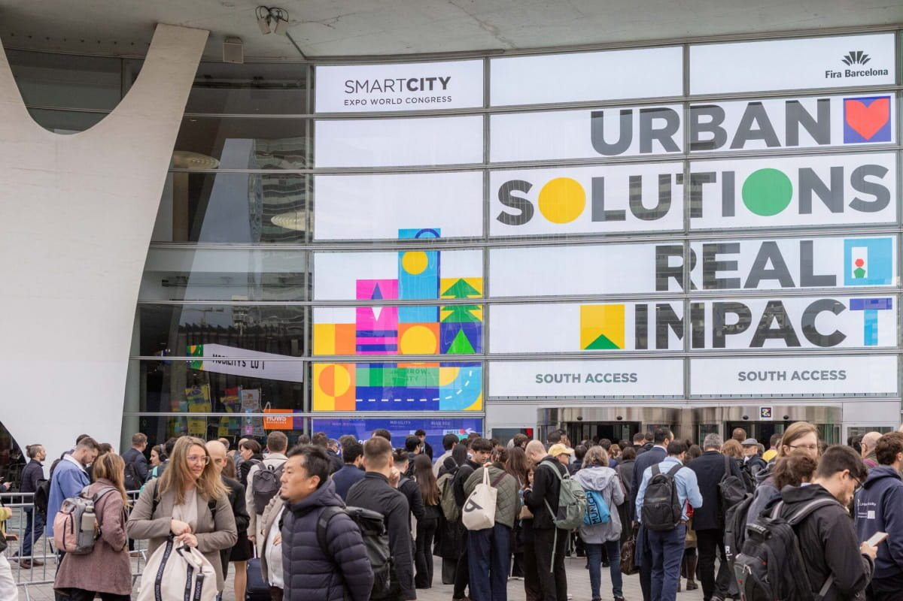
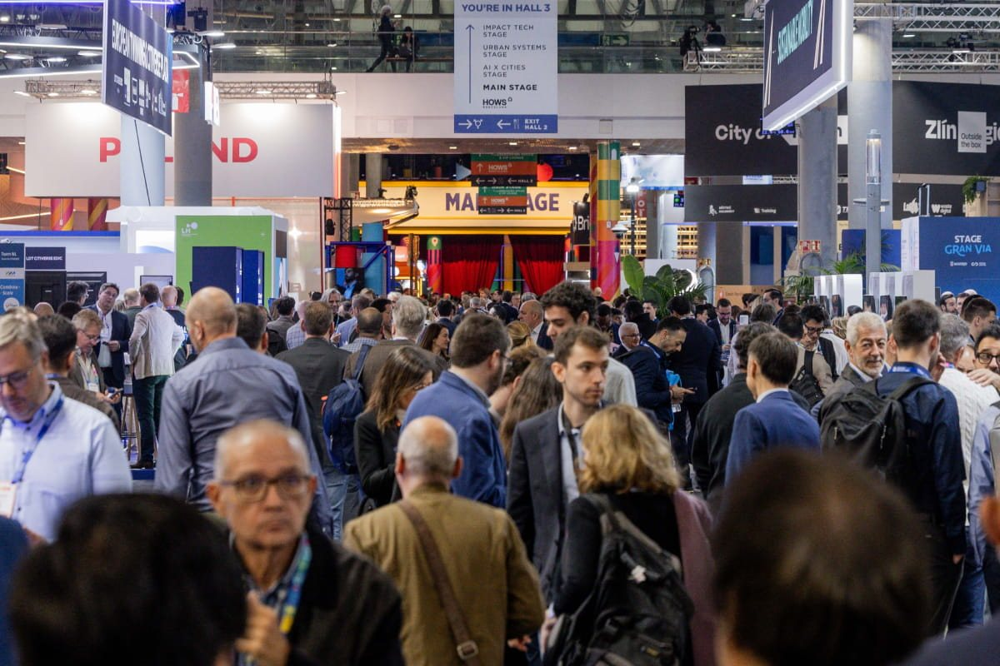
Exhibición
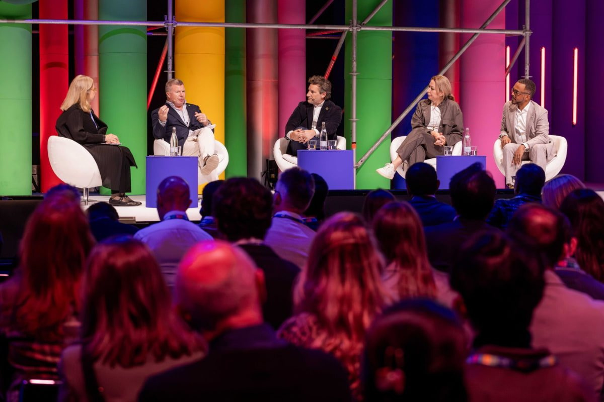
Congreso
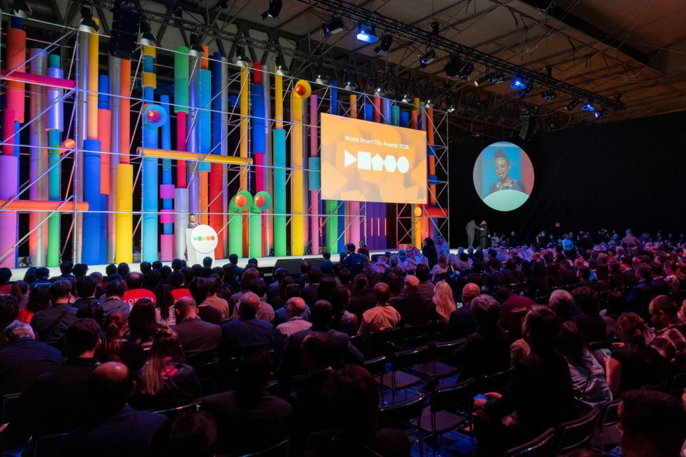
World Smart City Awards
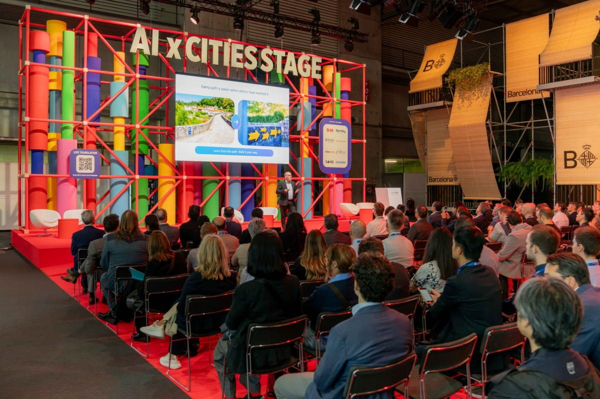
AI x Cities Stage
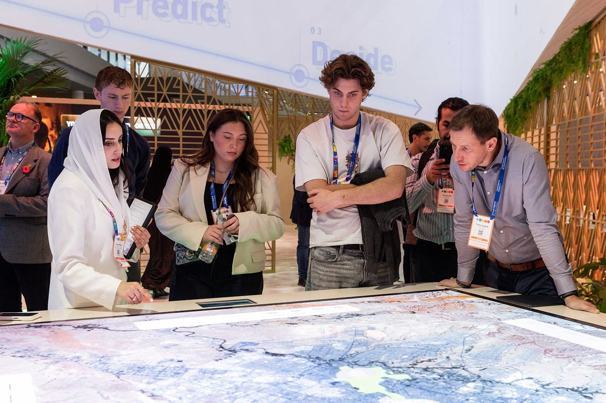
Demostraciones
Fotos: Smart City Expo World Congress 2026 · Fira de Barcelona.
Con un solo pase de visitante, la delegación recorre el congreso principal y sus eventos paralelos, cada uno enfocado en un reto urbano crítico. En la fase de preparación, cada empresa elige los espacios y las citas que mejor se ajustan a su sector.
Tomorrow. MobilityWorld Congress
Movilidad urbana sostenible, inclusiva e inteligente. Coorganizado con EIT Urban Mobility; en 2026 reunió más de 5.000 asistentes, 200 expositores y 240 ponentes.
Para las MiPymesLogística, transporte de carga y última milla.
Aprovechamiento sostenible de los recursos oceánicos para el crecimiento económico. Incluye el congreso de puertos inteligentes Smart Ports: Piers of the Future.
Para las MiPymesPuerto, turismo, industria naval y astillera de Cartagena.
Cumbre internacional sobre vivienda urbana y asequible, impulsada por el Ayuntamiento de Barcelona: planeación urbana, regulación, vivienda social y rehabilitación.
Para las MiPymesConstrucción, inmobiliario y servicios a la vivienda.
Eventos paralelos de la edición 2026. La programación de 2027 se confirma con Fira de Barcelona durante la preparación de la misión.
3.3
Estructura Comfenalco · 3.3
Metodología de trabajo
La misión funciona como un programa de consultoría y acompañamiento con el viaje en el centro. Son cuatro fases en seis meses, de julio a diciembre de 2027.
Fases de ejecución
Cuatro fases en seis meses
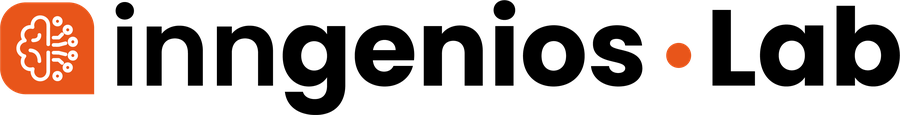
Diagnóstico especializado
Cada empresa llega a Barcelona con un diagnóstico estratégico avanzado y apalancado con inteligencia artificial
El diagnóstico inicial de la misión se hace en Inngenios·Lab, nuestra plataforma de diagnóstico estratégico e innovación empresarial. Combina metodologías de innovación probadas con inteligencia artificial, y se complementa con una entrevista del equipo consultor.
01Diagnóstico multidimensionalPropuesta de valor, relación con los clientes, infraestructura, costos e ingresos, y preparación para internacionalizarse.
02Modelo de negocio en semáforoEl Business Model Canvas de la empresa con fortalezas, puntos a reforzar y debilidades.
03Recomendaciones de innovaciónOportunidades priorizadas según los diez tipos de innovación, con tácticas y casos de referencia.
04Análisis con IA y hoja de rutaUn informe estratégico personalizado que se convierte en el plan de acción de la empresa.
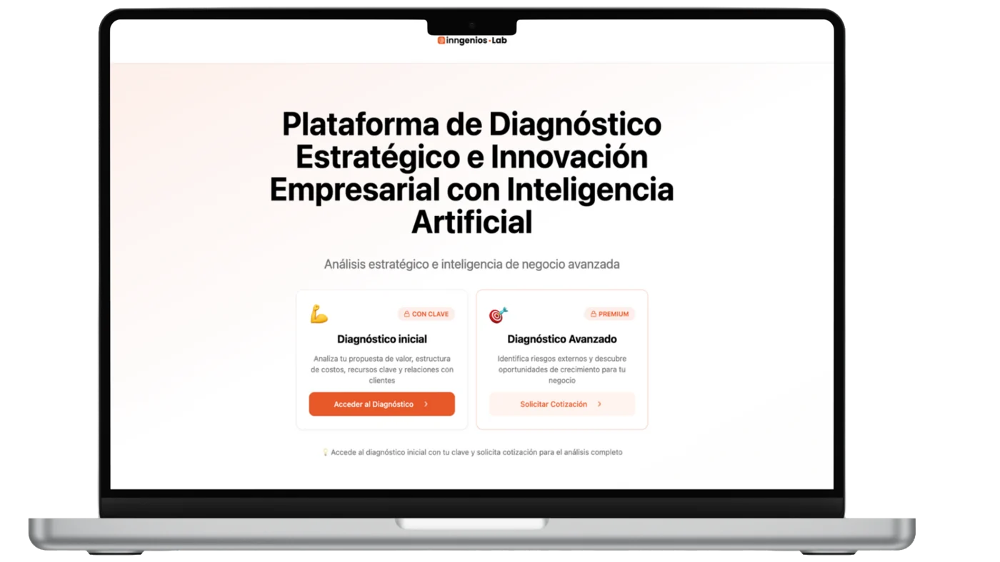
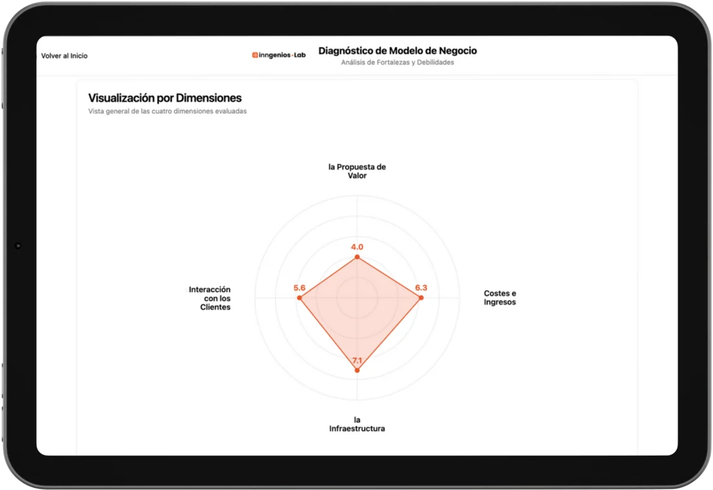
Lectura por dimensionesDónde está fuerte la empresa y dónde debe enfocar la misión.
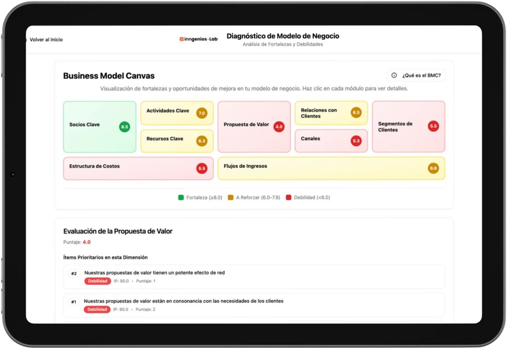
Modelo de negocioCada módulo del lienzo calificado y con sus ítems prioritarios.
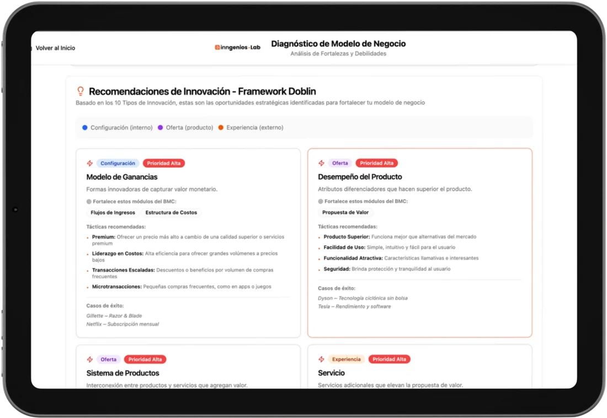
Recomendaciones de innovaciónOportunidades por prioridad, conectadas con el modelo de negocio.
EntradaDiagnóstico antes del viaje: define el reto, el objetivo comercial y la agenda de cada empresa.
Hoja de rutaEl análisis se convierte en el plan de acción que la empresa lleva a Barcelona y aplica al volver.
SalidaEl mismo diagnóstico al cierre mide el avance y alimenta los indicadores de impacto.
Destino de la misión: Barcelona
Anclada al Smart City Expo World Congress, 2 al 4 de noviembre de 2027
Barcelona reúne en una sola semana el congreso de ciudades inteligentes más importante del mundo, laboratorios de innovación y un ecosistema empresarial con el que Inngenios ya trabaja.
Pertinencia
Afín a Cartagena y Bolívar
Ocho ejes temáticos y seis eventos paralelos que hablan a todo el tejido empresarial de Cartagena y Bolívar, no a un solo sector. Se conecta con cada apuesta productiva de la región:
Industria marítima y naval
Logística territorial
Turismo inclusivo y cultural
Petroquímica y plásticos
Agroindustria sostenible
Servicios globales y economía digital
Construcción y vivienda
Negocios
Puerta al mercado europeo
El congreso concentra en tres días a ciudades, países y empresas con las que agendar citas.
27.000+asistentes
990+ciudades
138países
1.190expositores
Cifras de la edición 2026 de Smart City Expo World Congress
Innovación aplicada
Laboratorios a pocos minutos
Protofy, Manual Thinking, DFactory, el Barcelona Supercomputing Center y el distrito 22@ en una misma ciudad.
Menor riesgo
Ruta ya recorrida
Misión probada por Inngenios en 2025, con aliados y operación local.
Smart City Expo y las apuestas productivas de Cartagena y Bolívar
Qué verán las empresas en Barcelona según su sector
Apuesta productiva
Áreas de Smart City Expo y de la ciudad
Qué se ve en Barcelona
Industria marítima y naval
Blue Economy
Puertos inteligentes en el congreso Smart Ports: Piers of the Future, astilleros y economía del océano.
Logística territorial
MobilityBlue Economy
Logística urbana, transporte de carga, última milla y puertos conectados con la ciudad.
Turismo inclusivo y cultural
Living & InclusionMobilityTurismo smart · recorrido
Cómo Barcelona gestiona el turismo con datos, movilidad del visitante y cuidado del espacio público.
Petroquímica y plásticos
Energy & EnvironmentTomorrow.Building
Transición energética, economía circular y nuevos materiales para la industria.
Agroindustria sostenible
Energy & EnvironmentDeep Tech
Sostenibilidad, agua, trazabilidad y tecnología aplicada a la cadena productiva.
Servicios globales y economía digital
Deep TechCybersecurity
Inteligencia artificial, datos, ciberseguridad y empresas de base tecnológica.
Construcción y vivienda
HOWS · ViviendaTomorrow.Building
Vivienda asequible, construcción industrializada, rehabilitación y eficiencia energética.
Apuestas productivas de Cartagena y Bolívar según la Cámara de Comercio de Cartagena (2025); se suma construcción y vivienda por su peso en el tejido empresarial de la ciudad. Las áreas corresponden a la edición 2026 del congreso.
Agenda tipo en Barcelona
Tentativa, sujeta a la confirmación de cada entidad
Día
Actividad
Componente
Sáb. 30 y dom. 31 de octubre
Salida de Cartagena, llegada, registro y reunión de orientación
Logística
Lunes 1 de noviembre Festivo en España
Taller de arranque de Inngenios y recorrido por el distrito de innovación 22@
Innovación
Martes 2
Smart City Expo: recorrido guiado y agenda de citas en pabellones de ciudades, países y empresas
Comercial
Miércoles 3
Entrenamiento Manual Thinking en el laboratorio de Luki Huber. Visita al Barcelona Supercomputing Center. Espacio de relacionamiento del congreso
InnovaciónComercial
Jueves 4
DFactory y Zona Franca: encuentro con empresas residentes de industria 4.0. Rueda de negocios y acercamiento con la Cámara de Comercio de Barcelona y el ecosistema empresarial
Comercial
Viernes 5
Entrenamiento en innovación tecnológica, prototipado y testeo en Protofy. Visita empresarial al taller de Tromber
InnovaciónComercial
Sáb. 6 y dom. 7
Cierre y compromisos por empresa en la mañana del sábado. En la tarde, recorrido de turismo smart: cómo Barcelona, referente mundial en ciudades inteligentes, gestiona el turismo con datos, movilidad y tecnología en el espacio público. Regreso el domingo
CierreInnovación
El módulo académico con certificado se ubica en la semana según la disponibilidad de la institución.
Entrenamiento Manual Thinking con Luki Huber
Taller de 3 horas en el estudio Manual Thinking · Barcelona
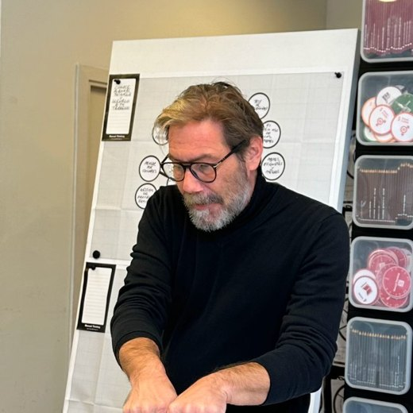
Creador de Manual Thinking
Luki Huber
Diseñador de producto · Barcelona
Diseñador de producto suizo radicado en Barcelona. Lleva décadas trabajando con empresas y proyectos de referencia, y ha explorado la relación entre el diseño y la gastronomía en contextos como elBulli, junto a Ferran Adrià.
Creó Manual Thinking en su estudio de diseño al buscar cómo optimizar el proceso creativo con los equipos de sus clientes. Hoy compagina el diseño con la docencia, la divulgación y la creación de herramientas para pensar y diseñar en contextos complejos.
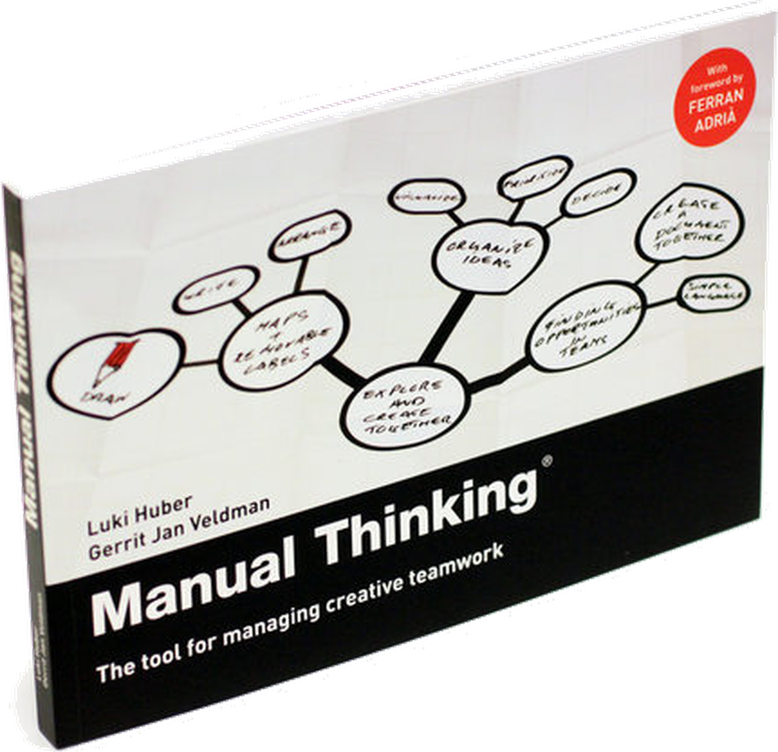
El método
Pensar con las manos para crear en equipo.
Manual Thinking nace en 2009 como un sistema de mapas, etiquetas, métodos y mobiliario para gestionar el trabajo creativo en equipo. Prioriza la palabra escrita y el dibujo sobre la conversación, para que todo el equipo explore los proyectos de forma amplia, ordenada y democrática.
Su libro, Manual Thinking. The tool for managing creative teamwork, escrito con Gerrit Jan Veldman, lleva prólogo de Ferran Adrià.
3 horas de taller prácticoEn la sede de Manual Thinking, BarcelonaGrupos ideales de 15 personasMateriales y dossier resumen incluidos
Las empresas viven el método en el lugar donde nació, con su creador. Trabajan sobre retos reales de sus negocios y se llevan una forma de idear, priorizar y poner en marcha proyectos en equipo que pueden replicar en Cartagena.
01
Entrar en el método
Ejercicios de arranque con mapas y etiquetas: escribir y dibujar antes que hablar.
02
Entender el reto
Cada equipo despliega su reto y lo comparte con el grupo.
03
Idear en equipo
Secuencias de métodos creativos para encontrar oportunidades donde no se buscaban.
04
Seleccionar
Evaluación democrática para quedarse con las mejores ideas de cada reto.
05
Poner en marcha
Cada idea elegida sale con un método y un mapa para llevarla a la empresa.
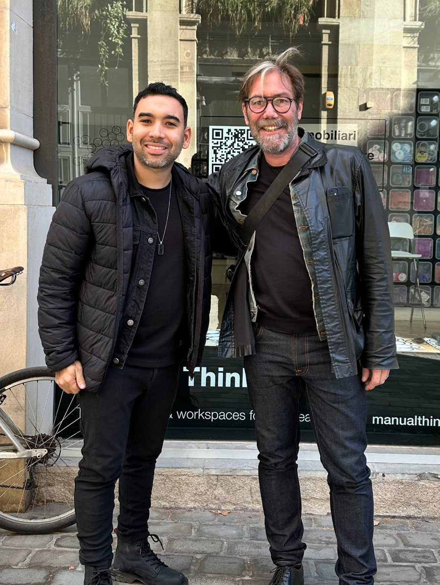
Cristian Torres y Luki Huber, estudio Manual Thinking
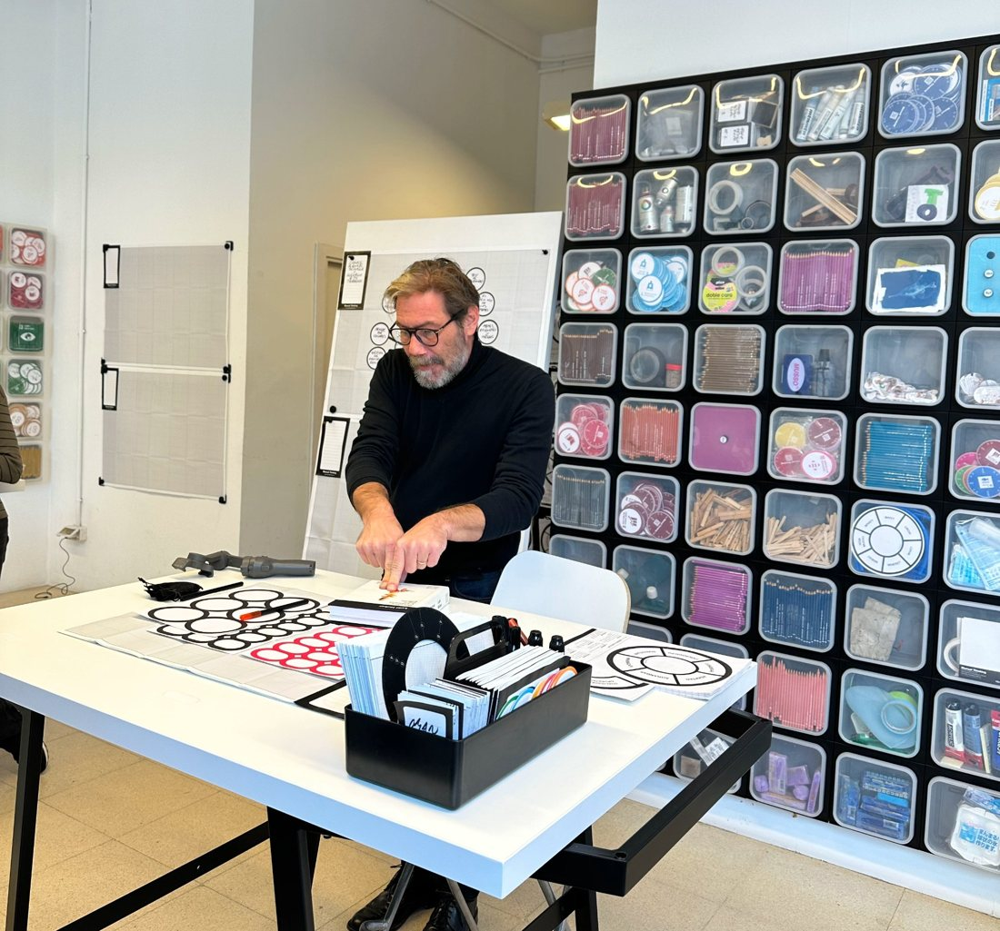
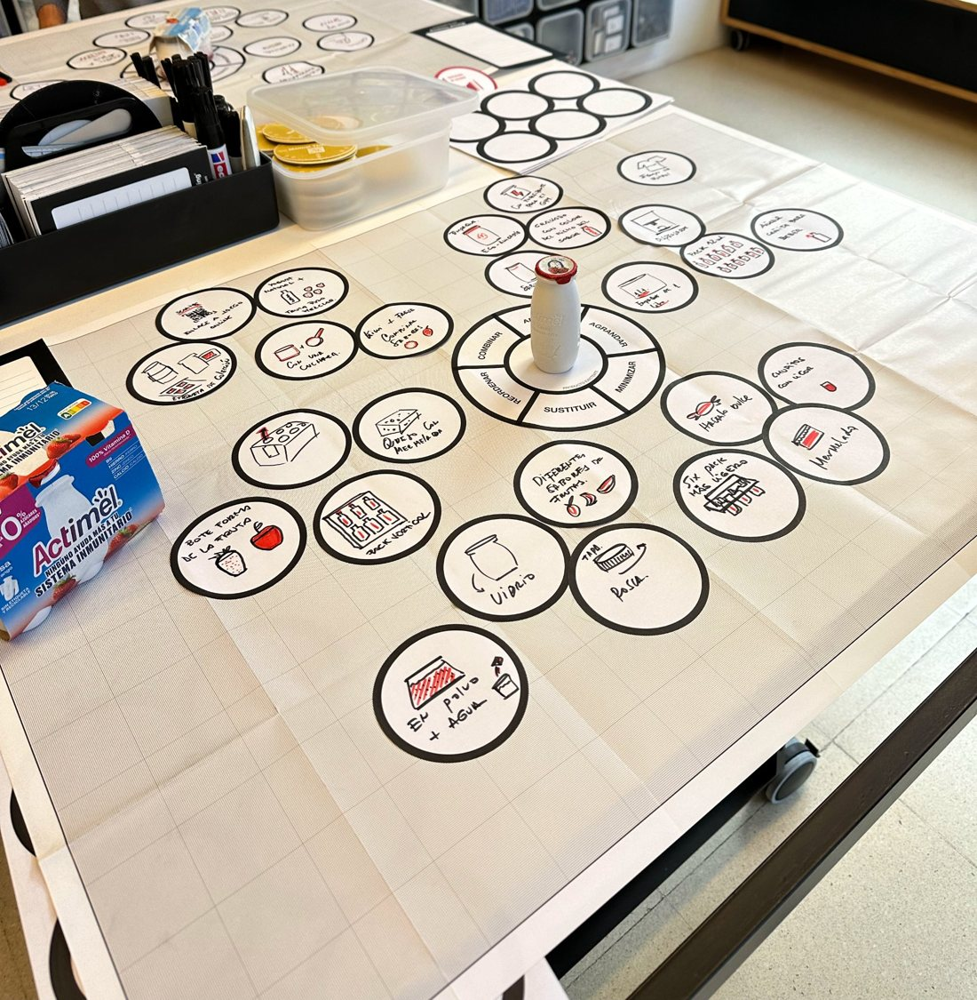
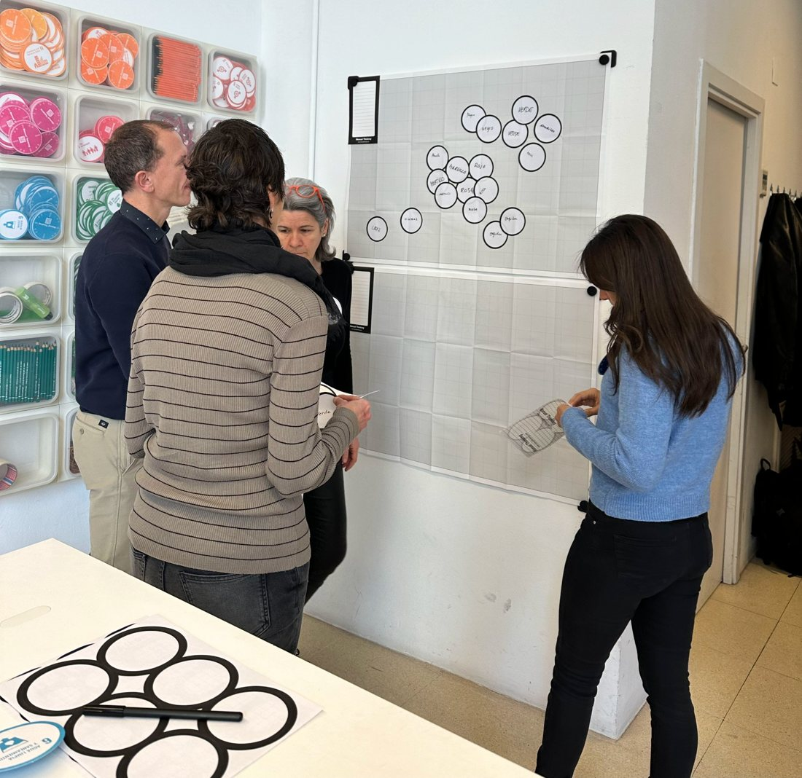
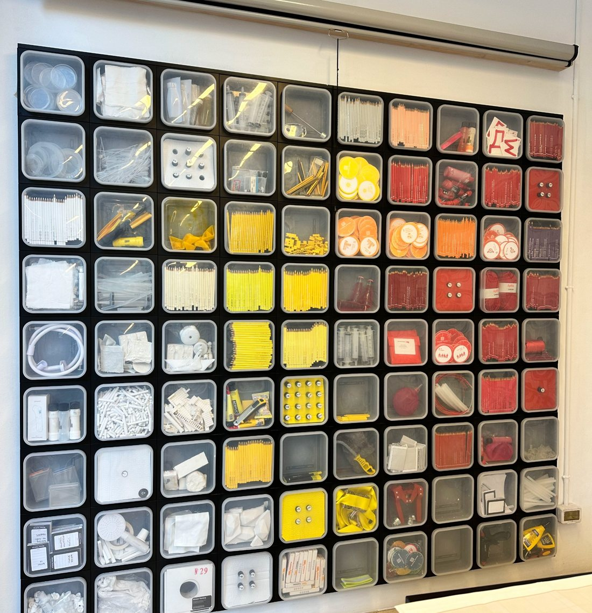
Fotos: estudio Manual Thinking, Barcelona. El contenido del taller se ajusta con Luki Huber a los retos de las empresas participantes.
Entrenamiento Protofy: innovación y prototipado con inteligencia artificial
Taller de 4 horas en el laboratorio de Protofy · Barcelona
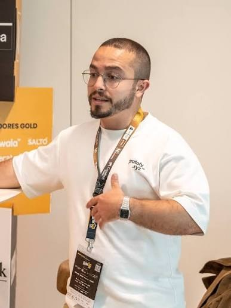
Protofy en un evento del ecosistema de innovación
Laboratorio de innovación · Aliado principal
Protofy: ingeniería que lleva las ideas al mundo físico
Protofy.xyz es una empresa de Barcelona que ayuda a empresas y departamentos de investigación a desarrollar soluciones tecnológicas rápidas y de alta calidad, integrando hardware (mecánica, electrónica) y software. La cofundaron Ignasi Plaza, Lluís Rovira y Joan Guasch.
Hoy lleva la inteligencia artificial a la operación de las empresas: describe una tarea, pone el hardware desde su Protofactory de Barcelona y agentes de IA la ejecutan. Su experiencia viene de más de 600 proyectos.
SoftwareInteligencia artificialHardware a medidaCNCCorte láserImpresión 3DBancos de electrónica
600+proyectos desarrollados
50+países con OxyGEN
IA + hardwareen un mismo equipo
Proyectos insignia
2020 · Salud
OxyGEN
Respirador de emergencia de hardware abierto creado en plena pandemia, con el apoyo científico del Hospital Clínic, el Hospital Germans Trias i Pujol y la Universidad de Barcelona. Recibió la autorización de la agencia española del medicamento (AEMPS) para ensayos clínicos y sus planos se compartieron con más de 50 países.
Plataforma · Beta
Vento
Plataforma para delegar en agentes de IA las tareas del mundo físico. Se describe el trabajo en lenguaje natural y Vento diseña el software, la electrónica y el plan de montaje; luego los agentes supervisan el sistema y actúan. Conecta sensores, visión y voz, y paneles de control.
Industria · Resultados
Casos en planta
Equipos de protección: incumplimientos de 23 % a 3 % en cuatro semanas.
Calidad de conectores por sonido en una planta automotriz: fallos de 0,8 % a 0,05 %.
Reportes de turno a SAP: de dos o tres días a menos de 10 minutos.
Casos de consultoría
Automoción
Calidad por sonido con IA
La IA escucha el clic de cada conector para verificar que el cableado quedó bien insertado.
Moda y retail
Agente de IA en WhatsApp
Recomienda outfits desde el catálogo de la marca y permite comprar sin salir del chat.
Festivales y eventos
Sistema cashless con IoT
Vasos inteligentes ligados a una cuenta: pago, recarga y trazabilidad desde una app.
Eventos
Monitoreo de células de carga
Carga en tiempo real, prevención de sobrecargas y un panel central para decidir.
Sostenibilidad
Dispensadores IoT de agua
Agua osmotizada en espacios públicos para reducir el plástico de un solo uso.
Suministros corporativos
Vending IoT con NFC
Acceso por tarjeta a material de limpieza, con registro de cada transacción y del stock.
Laboratorios
Análisis de muestras con IA
Procesa imágenes periódicas, cuantifica el crecimiento y genera informes solos.
Energía y reciclaje
Hidrógeno y trazabilidad
Un generador eléctrico de hidrógeno y la trazabilidad de residuos de la venta al reciclaje.
Han confiado en ProtofySEATBosch EspañaIDNEOFounderz
El entrenamiento
4 horas de taller prácticoEn el laboratorio de ProtofyInteligencia artificial aplicada al mundo físicoPara todos los sectores
Las empresas pasan de la idea al prototipo en una sola sesión. Con el equipo de Protofy aprenden a usar la inteligencia artificial para diseñar, probar y validar soluciones a un reto real de su negocio, y conocen cómo un laboratorio de Barcelona convierte ideas en productos.
01
Del reto a la idea
Cada equipo trae un problema real de su operación o de sus clientes.
02
Prototipar con IA
Se describe la solución en lenguaje natural y la IA propone el diseño.
03
Sensores, visión y datos
Cómo la tecnología capta lo que pasa en el mundo físico y lo convierte en decisiones.
04
Experimentar y testear
Probar rápido, medir y ajustar antes de invertir.
05
Llevarlo a la empresa
Cada prototipo sale con próximos pasos para aplicarlo en Cartagena.
Fuentes: protofy.xyz (incluida su página de consultoría), vento.build y oxygen.protofy.xyz. El contenido del taller se ajusta con Protofy a los retos de las empresas participantes.
Cómo se cubre cada mitad de la misión
Según los componentes definidos por Comfenalco en la solicitud
Componente comercial · 50 %
Negocios, contactos y canales
01Rueda de negocios B2B en Barcelona.
02Agenda de citas por empresa con compradores, distribuidores y aliados potenciales dentro del Smart City Expo.
03Conexión con cámaras y entidades de apoyo: acercamientos con la Cámara de Comercio de Barcelona y el distrito de innovación 22@, gestionados durante la preparación.
04Networking empresarial: espacios de relacionamiento del congreso y dos cenas de relacionamiento.
05Visitas a empresas y aliados: empresas residentes de DFactory y Tromber, pyme catalana que entró al mercado colombiano con un aliado local.
Innovación aplicada y transferencia · 50 %
Aprender haciendo, en los laboratorios
01Protofy, aliado principal: 4 horas de entrenamiento en innovación tecnológica, prototipado, experimentación y testeo.
02Manual Thinking: 3 horas de entrenamiento en el método de trabajo visual y cocreación del estudio de Luki Huber.
03Módulo académico con certificado en una universidad o escuela de negocios de Barcelona.
04Visitas técnicas y recorrido por el ecosistema: Barcelona Supercomputing Center, DFactory como modelo de clúster y encadenamiento, y distrito 22@.
05Conferencias y casos de éxito del congreso, con buenas prácticas de innovación aplicables a MiPymes.
Diseño detallado. Esta propuesta indica cómo se trabajará y qué temas se abordan. El diseño de cada jornada, las guías y los instrumentos se entregan en el plan operativo, una vez aprobada la propuesta.
Así se vivió la edición 2025
Fotos: archivo Misión B·SMART 2025
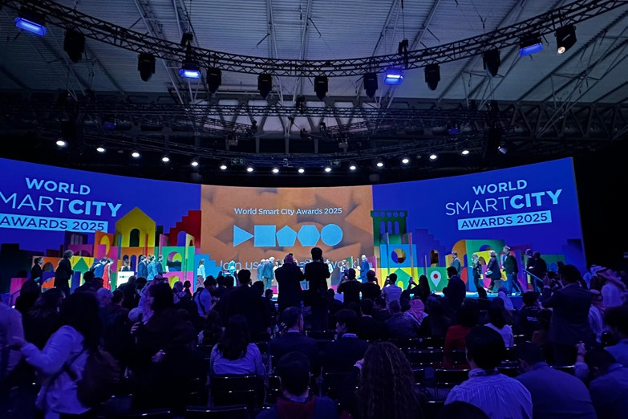
Smart City Expo World CongressEl evento ancla de la misión
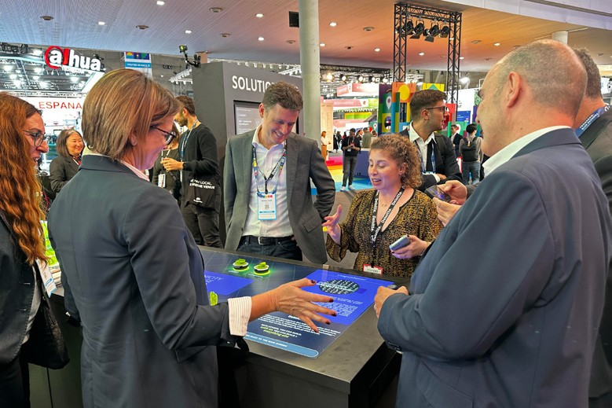
Relacionamiento en el congresoCitas con empresas y ciudades
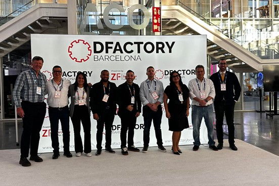
DFactory BarcelonaClúster de industria 4.0 de la Zona Franca
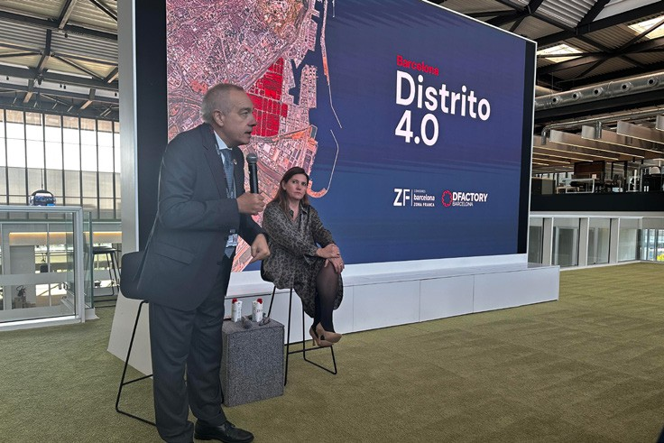
Distrito 4.0Encuentro con el ecosistema industrial
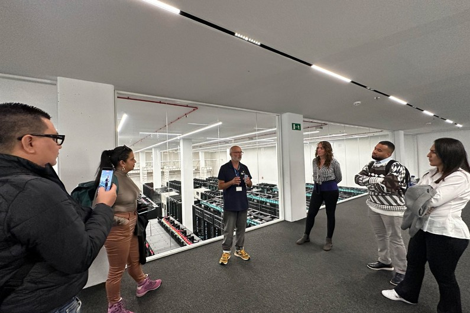
Barcelona Supercomputing CenterVisita técnica
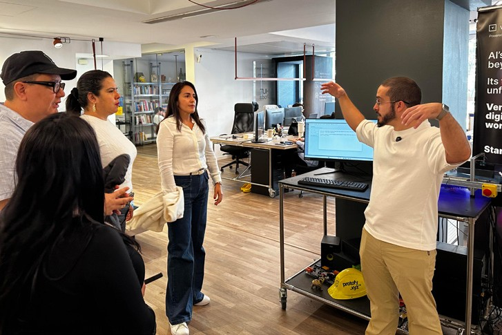
ProtofyLaboratorio de innovación y prototipado
Medición de impacto
Los siete indicadores de Comfenalco, cada uno con meta
Indicador
Cómo se mide
Meta propuesta
Transferencia de buenas prácticas aplicables
Buenas prácticas documentadas en la bitácora y adoptadas en el plan de acción
Al menos 3 por empresa
Planes de acción para la gestión de la innovación
Planes formulados y validados con cada empresa
20 de 20
Fortalecimiento de capacidades de innovación
Diagnóstico de entrada frente a diagnóstico de salida
Mejora en el 80 % de las empresas
Incremento de oportunidades comerciales
Oportunidades registradas con contraparte identificada
Al menos 3 por empresa
Contactos estratégicos generados
Registro de contactos por empresa
Al menos 10 por empresa
Alianzas estratégicas establecidas
Acuerdos, cartas de intención o pilotos en curso a diciembre
Al menos 5 en el grupo
Empresas que implementan innovación después de la misión
Iniciativas en ejecución verificadas en el seguimiento
Al menos 12 de 20
Las metas son compromisos de gestión sobre lo que controla el programa y se ajustan con Comfenalco en el plan operativo. Indicadores de ejecución y calidad: asistencia a sesiones (meta 90 %), cumplimiento del cronograma, satisfacción de los participantes (NPS) y entregables recibidos a satisfacción por cada empresa.
Herramientas e instrumentos
Ficha de oferta exportable, agenda de citas por empresa, bitácora de misión, registro de contactos y alianzas, lienzo de modelo de negocio y plan de acción de innovación.
3.4
Estructura Comfenalco · 3.4
Equipo de trabajo
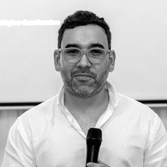
Cristian Torres
Director de InngeniosConsultor en innovación empresarialSpeaker internacionalFundador del Genius Fest, evento de innovación y creatividad
Ingeniero Industrial y Magíster en Gestión de la Innovación, conferencista internacional, consultor empresarial y Design Thinker, con Máster en Emprendimiento y Desarrollo de Ideas de Negocio del Instituto Europeo de Posgrado. Creador de la Metodología de Creatividad Aplicada e Innovación 6i® y experto en metodologías creativas.
Actualmente es director de la agencia de innovación Inngenios, director de operaciones de Tromber Colombia y fundador del movimiento y festival de innovación Genius Fest. En los últimos años ha entrenado e impactado a más de 9.000 personas en creatividad aplicada, pensamiento en diseño, innovación y emprendimiento con metodologías ágiles.
Formación
Magíster en Gestión de la Innovación
Máster en Emprendimiento y Desarrollo de Ideas de Negocio · Instituto Europeo de Posgrado
Ingeniero Industrial
Innovación Empresarial · Tecnológico de Monterrey
Trayectoria destacada
Reconocido como Innovador Distinguido por el programa de Magíster en Gestión de la Innovación de la Pontificia Universidad Católica de Chile
Reconocido en 2020 como uno de los diez mejores Consultores Máster de la Cámara de Comercio de Cartagena e iNNpulsa Colombia
Mentor y facilitador de los programas de UX Estratégico y Service Design de Repensar Educativo (Perú)
Asesor experto del programa Negocios Verdes del Centro de Transferencia e Innovación de la Universidad de Cartagena
Consultor de enlace para Colombia (2023) de la agencia chilena Transforme en el proyecto READINESS Recuperación Verde del IICA
Facilitador certificado
Creatividad aplicada a negocios e innovación empresarial
Design Thinking
Customer Experience Design Management · CX LATAM
Six Thinking Hats
Lean Startup Program Developer
Management 3.0
Pro.Play Method
ICQ Coaching, Team Building Experience y STEP-PRO · avaladas por Humanagement (Chile) y la ICMF (International Coaching & Mentoring Federation)
Heidy Montes Garcés
Consultora en desarrollo empresarialEstratega de marca y relaciones públicasGestora cultural
Administradora industrial de la Universidad de Cartagena, con posgrado en Gestión Empresarial de la misma universidad y Magíster en Gestión de Artes y Cultura de la Universidad de Melbourne (Australia), como beneficiaria de la Fundación Colfuturo. Tiene más de 10 años de experiencia en planeación estratégica, mercadeo, desarrollo de marca y relaciones públicas, en proyectos y eventos nacionales e internacionales.
En la misión acompaña el diagnóstico inicial y la formulación de las hojas de ruta de las empresas, y las prepara para presentar su propuesta de valor en los encuentros comerciales de Barcelona.
Formación
Master of Arts and Cultural Management · University of Melbourne (Australia), 2024
Posgrado en Gestión Empresarial · Universidad de Cartagena
Administración Industrial · Universidad de Cartagena · mejor promedio académico
Experiencia
Planeación estratégica y desarrollo de marca
Mercadeo estratégico, relaciones públicas y posicionamiento de proyectos
Festivales y eventos nacionales e internacionales
Liderazgo de equipos multidisciplinarios
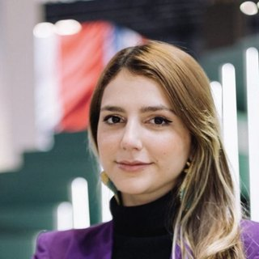
Paola López
Consultora de acompañamientoExperta en innovación y emprendimientoConsultora en transformación digital
14años en gestión de proyectos
+50empresas con soluciones digitales
Profesional multilingüe con 14 años de trayectoria en la gestión de proyectos en los sectores público y privado. Su experiencia se centra en el emprendimiento, la innovación y la transformación digital: ha liderado equipos multifuncionales, ha diseñado estrategias para startups y proyectos sostenibles, y ha creado productos y soluciones digitales para más de 50 empresas.
En la misión hace el seguimiento de los planes de acción y acompaña a las empresas en destino, con foco en modelos de negocio, soluciones digitales y la aplicación de lo aprendido en Barcelona.
Formación
Maestría en Gestión de Destinos
Especialización en Negociación · Universidad de los Andes
Formación en Ciencia de Datos e Inteligencia Artificial
Formación en Gestión de Gobierno
Experiencia
Gestión de proyectos en entidades públicas y empresas privadas
Acompañamiento a startups y proyectos sostenibles
Liderazgo de equipos multidisciplinarios
Transformación digital en el sector turístico
Enlace en el ecosistema de Barcelona
Aliado principal de la misión
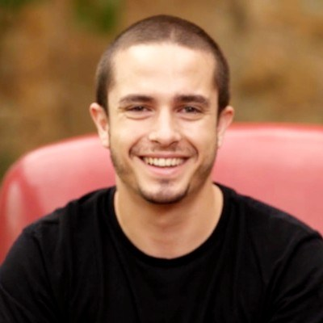
Protofy · Barcelona
Ignasi Plaza
Director del laboratorio de innovación y prototipado Protofy
Facilitador y persona de enlace de la misión en el ecosistema de innovación de Barcelona. Lidera el entrenamiento de 4 horas en innovación tecnológica, prototipado, experimentación y testeo que reciben las empresas en el laboratorio de Protofy.
Equipo del programa y aliados en Barcelona
Las hojas de vida se anexan con el plan operativo
Rol
Responsabilidad
Dirección del programa Cristian Torres
Dirige la metodología, acompaña la misión y responde ante Comfenalco
Consultores de acompañamiento Heidy Montes Garcés · Consultora en desarrollo empresarial Paola López · Consultora de acompañamiento
Asesoría individual, seguimiento de planes de acción y acompañamiento en destino
Coordinación administrativa y logística María Fernanda García · Administradora de Inngenios
Gestión administrativa y financiera del programa, reservas, documentación de viaje, actas, evidencias e informes
Coordinación local en Barcelona Operador local aliado
Agenda de visitas, relación con entidades y soporte operativo en destino
Aliado o entidad
Papel en la misión
Protofy
Aliado principal. Entrenamiento de 4 horas y visita a su laboratorio
Manual Thinking · Luki Huber
Entrenamiento de 3 horas en su estudio, con Luki Huber
Tromber
Empresa aliada. Visita empresarial a su taller
DFactory y Zona Franca
Visita al clúster de industria 4.0 y encuentro con empresas residentes
Barcelona Supercomputing Center
Visita técnica
Cámara de Comercio de Barcelona y 22@
Acercamientos en exploración para el relacionamiento comercial
3.5
Estructura Comfenalco · 3.5
Plan de trabajo
Línea de tiempo y cronograma 2027
Fechas tentativas, a ajustar con Comfenalco en el plan operativo
Fase
Periodo
Actividades principales
Responsable
Alistamiento
Junio
Plan operativo, cronograma y convocatoria a afiliados
Inngenios y Comfenalco
1. Diagnóstico y selección
Julio a agosto
Selección de 20 empresas, diagnóstico inicial, reto y objetivo comercial
Inngenios
2. Preparación
Septiembre a octubre
Sesiones grupales, asesoría individual, agenda de citas y alistamiento de viaje
Inngenios y coordinación local
3. Misión en Barcelona
30 de octubre al 7 de noviembre
Semana de inmersión
Inngenios y aliados
4. Implementación y medición
Noviembre a diciembre
Planes de acción, seguimiento, diagnóstico de salida, socialización e informe final
Inngenios
Fecha de aprobación
Para asegurar tarifas aéreas, hotel y la tarifa anticipada del congreso, la propuesta debería aprobarse a más tardar en mayo de 2027.
3.6
Estructura Comfenalco · 3.6
Entregables
Entregable principal
Informe general de resultados, con indicadores y recomendaciones de sostenibilidad
Reúne el resultado de las 20 empresas, el cumplimiento de las siete metas de impacto y las recomendaciones para que Comfenalco dé continuidad al proceso. Se soporta en un plan de acción de innovación e internacionalización por empresa.
Los nueve entregables del instructivo, en la fase donde se producen
Alistamiento
1. Plan operativo y cronograma
Fase 1
2. Diagnóstico inicial por empresa
Fase 1 · se actualiza en la 4
3. Hoja de ruta o plan de trabajo por empresa
Una por fase
4. Actas de actividades firmadas por cada empresa
Uno por fase
5. Informes parciales de ejecución
Con cada informe
6. Anexos con evidencias: asistencias, fotos y grabaciones
Fase 4
7. Informe de resultado por empresa
Fase 4
8. Acta de cumplimiento firmada por cada empresa
Fase 4
9. Informe general de resultados
3.7
Estructura Comfenalco · 3.7
Valor agregado y propuesta de valor
Por qué elegir esta propuesta: seis diferencias frente a una misión de visitas.
1
Formación práctica en laboratorios
Ocho horas de entrenamiento con Protofy y Manual Thinking en sus propios espacios, más un módulo académico con certificado.
2
Misión probada
B·SMART ya se realizó en Barcelona en 2025 con una delegación de Cartagena, con aliados y operación local.
3
La silla del empresario
Fuimos beneficiarios de una misión de Comfenalco. Por eso hay más preparación comercial antes del viaje y más seguimiento después.
4
Diagnóstico con inteligencia artificial
Inngenios·Lab entrega a cada empresa un análisis estratégico y una hoja de ruta, y permite comparar entrada y salida.
5
Metas comprometidas por indicador
Cada uno de los siete indicadores de Comfenalco tiene meta, línea base y forma de verificación.
6
Conocimiento de la Caja y su tejido empresarial
Acompañamos a Comfenalco desde 2021 y trabajamos en Cartagena con empresas, universidades y gremios.
Siguiente paso
Llevemos a 20 MiPymes de Cartagena al ecosistema de innovación de Barcelona
Quedamos atentos a sus comentarios para ajustar la propuesta con el equipo de Fomento Empresarial y avanzar hacia el plan operativo.